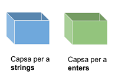

Tipus i variables
Declaració i inicialització
Una variable és un espai reservat a la memòria per a
emmagatzemar valors d'un tipus particular: un string, un número, o altres.
Cada variable té un nom (o identificador)
per a distingir-la d'altres. Abans d'utilitzar una variable, l'has de declarar.
La forma general de declarar una variable és així:
TipusDada nomVariable = inicialitzacio;
La part esquerra d'aquesta sentència descriu la variable, i la part dreta
descriu el valor que se li ha assignat.
- El tipus de la variable determina quines possibles
operacions es poden realitzar sobre la variable i quins valors es poden
guardar en ella. Aquí hem utilitzat un tipus de dada que no existeix
(TipusDada) per a demostrar la forma general de declaració.
- El nom (o identificador) distingeix
la variable de les altres. El nom d'una variable no pot començar amb un dígit;
normalment comença amb una lletra. Sempre s'ha de tractar de escollir noms
amb significat i que siguin legibles per a fer el codi més fàcil d'entendre.
- L'operador d'assignació denotat amb = s'utilitza
per a assignar un valor o un resultat d'una expressió a una variable.
- La inicialització és un valor que se li assigna a una
variable.
D'acord amb això, podem declarar una variable de tipus String i
assignar-li la paraula java:
String llenguatge = "java";
També podem declarar una variable de tipus int i guardar en ella un
número enter:
int nombreDePomes = 5;
Lés majúscules i minúscules importen! No és el mateix llenguatge
que Llenguatge.
Les variables no solament poden emmagatzemar strings i enters, sinò també
caracters, booleans, decimals, i altres tipus que veurem més endavant.
Una forma habitual d’entendre les variables és imaginar una variable com una capsa
on s’hi emmagatzema una dada o valor.
Així, hi ha capses de diferents colors, per a emmagatzemar diferents
tipus de dades.
Per exemple, capses blaves per a String i capses verdes per a int:

A les capses se'ls hi ha de posar un identificador per
a distingir-les. L'identificador ha de descriure la dada que s'hi guardarà.
Per exemple, si es volen guardar el nom i l'edat d'una persona, es poden
tenir aquestes capses:
En cadascuna d'elles s'emmagatzema el valor corresponent:
String nom = "Joan";
int edat = 24;
És un error tractar de guardar un tipus de dada en el tipus
de capsa inadequat:
int edat = "Joan"; // error!, la variable és int i el valor string
Per una altra banda, és vàlid posar els identificadors que
desitjem a les capses, però s'entendrà millor si posem un nom que descrigui
la dada que s'hi ha de guardar:
int nom = 24; // vàlid! però no té sentit ¿?¿?
Resol aquest problema:
Declaració invàlida de variables
Accedir al valor d'una variable
Un cop una variable ha estat declarada, el seu valor pot ser accedit i
modificat utilitzant el seu nom (identificador). En aquest exemple, declarem
una variable i després l'imprimim:
String diaDeLaSetmana = "Dilluns";
System.out.println(diaDeLaSetmana); // Dilluns
També es possible assignar el valor d'una variable a una altra variable. A la
línia 2 d'aquest codi estem assignant a avui el valor de diaDelMes:
int diaDelMes = 25;
int avui = diaDelMes;
System.out.println(avui); // 25
System.out.println(diaDelMes); // 25
És important notar que no es perd el valor d'una variable quan l'assignem a una altra variable.
Una característica important de les variables és que el seu valor pot canviar.
No s'ha de tornar a declarar la variable per a canviar-li el valor; únicament
se li ha d'assignar el nou valor utilitzant l'operador =.
Anem a declarar una variable anomenada diaDeLaSetmana i imprimirem
el seu valor abans i després de canviar-li'l:
String diaDeLaSetmana = "Dilluns";
System.out.println(diaDeLaSetmana); // Dilluns
diaDeLaSetmana = "Dimarts";
System.out.println(diaDeLaSetmana); // Dimarts
Hi ha una restricció en les variables: només pots assignar un valor del mateix
tipus que el tipus inicial de la variable. Així, el següent codi és incorrecte
int dia = 10; // ok
dia = 11; // ok
dia = "Dilluns"; // error! El tipus inicial era int
Recorda: una variable només pot tenir un únic valor a la vegada.
És a dir, quan guardem un valor en una variable, el valor que tenia abans es sobreescriu:
int edat = 24;
edat = 25;
Exercicis:
Assignacions
Completa la declaració
Formes alternatives de declaració
Hi han vàries formes alternatives de declarar variables que són menys
utilitzades en la pràctica. Aquí hi han alguns exemples:
-
Declarar vàries variables del mateix tipus
en una única sentència separant-les amb comes ,
String llenguatge = "java", versio = "8 o superior";
-
Separar la declaració i la inicialització:
int edat; // declaració
edat = 18; // inicialització
-
A la línia 1, reservem un espai a la memòria
per a guardar un int i l'identifiquem amb edat.
-
A 2 estem assignant el valor 18 en la zona
de memòria reservada per a la variable edat.
Tipus de variables
A la documentació oficial d'Oracle pots trobar els
tipus de dades del llenguatge Java.
En aquest curs utilitzarem més sovint els següents:
- int
- float
- boolean
- char
- String
A la següent taula pots veure els valors que permeten guardar aquests tipus de dades:
| Tipus | Valors permesos |
| int | un número enter (entre -2_147_483_648 i 2_147_483_647) |
| float | número decimal (e.g. 123.975f) |
| boolean | un booleà (true / false) |
| char | un caracter (entre cometes simples, e.g. 'a') |
| String | un string (entre cometes dobles, e.g. "java") |
Aquí tens un exemple de declaració d'una variable de cada tipus:
int edat = 18;
float notaMitjana = 8.75f;
boolean estaMatriculat = true;
char grup = 'A';
String email = "alumne@ins.com";
Inferència de tipus
A partir de Java 10, es pot escriure var en lloc d'un tipus específic
per a forçar la inferència de tipus basada en el tipus del valor assignat.
var nomVariable = inicialització;
Aquí tens dos exemples:
var llenguatge = "java"; // String
var versio = 10; // int
En aquest curs no utilitzarem la inferència de tipus, ja que utilitzarem
fonamentalment la versió 8 de Java, que de moment segueix sent la més
utilitzada.
Donada la següent declaració d'una variable:
String speed = "high";
Quin és el nom de la variable?
speed
"high"
high
String
Donat el següent codi:
int a = 10;
int b = 12;
int c = b;
int d = a;
int e = c;
Introdueix el valor de la variable e.
12
Escriu el valor de cada variable, després de que s'executi
cada sentència d'aquest programa:
| a | b | c |
| int a = 0; | 0 | | |
| int b = 0; | 0 | 0 | |
| a = 2; | 2 | 0 | |
| int c = b; | 2 | 0 | 0 |
Quin és el valor d'aquesta variable?
String animal = "tigre";
"animal"
"String"
animal
tigre
L'operador d'assignació en Java és:
<-
=
:=
->
Selecciona les afirmacions correctes sobre les variables.
Una variable té un tipus específic
El tipus determina el nom d'una variable
No es pot assignar un valor a una variable
Es pot llegir el valor d'una variable
Quantes variables s'han declarat al següent codi?
int i = 0, j = 0, k = 0;
String s = "s", str = "str";
5
Selecciona les declaracions vàlides
float aFloat = "23.75f";
String mFloat = "98.7";
int cFloat = 44.3;
String kFloat = float;
char dFloat = '.';
String tFloat = "float";
El següent codi:
boolean turnedOn = true;
turnedOn = false;
String turnedOff = turnedOn;
System.out.println(turnedOff);
Imprimeix false
Imprimeix true
S'executa però dona un error
No es pot executar
Resol aquests problemes:
Tipus correctes
Valors correctes
Noms correctes
Anomenar variables
Per què el nom és important?
Com ja saps, cada variable té un nom que l'identifica de forma única respecte a les
altres variables. Donar un bon nom a una variable potser no és tan simple com sembla.
Els programadors amb experiència posen molt de compte en posar els noms per a fer els
seus programes més fàcils de comprendre. És molt important perquè els programadors
dediquen molt de temps a llegir i comprendre programes escrits per altres programadors.
Si les variables tenen noms dolents, inclús el teu propi codi et semblarà poc clar en uns
pocs mesos.
Sempre tracta de ser descriptiu i concís al posar nom a les variables. A la llarga
ho agrairàs.
A més a més, per a posar noms has de seguir les regles i les convencions.
Regles per a anomenar variables
Les regles de Java per als noms de variables són:
- distingeix majúscules i minúscules
- pot incloure lletres Unicode, digits, i els caracters $ _
- no pot començar per un dígit
- no pot ser una paraula-clau (class, static, void, int, són il·legals)
En base a aquestes regles, pots concloure que els espais en blanc no estan permesos en el nom
d'una variable.
Si trenques alguna d'aquestes regles el teu programa no funcionarà
Aquí tens alguns exemples de noms vàlids:
numero, $ident, bigValue, _val, abc, k
Aquests són invàlids:
@ab, 1c, !ab, class
Convencions per a anomenar variables
També hi ha una sèrie de convencions per a anomenar variables en Java:
- si el nom de la variable és una única paraula, s'escriu en minúscula (e.g.
numero, preu)
- si el nom de la variable inclou vàries paraules, s'han d'escriure en
lowerCamelCase, això és, la primera paraula ha de ser en minúscula i la resta
han de tenir la primera lletra en majúscula (e.g. numeroDeMonedes)
- no han de començar per $ ni per _, encara que estigui permés
- escull noms amb significat, e.g punts té més sentit que p, tot i
que els dos són vàlids.
Aquestes convencions són opcionals, tot i que es recomana seguir-les. Com hem dit
al principi, aquestes convencions faran el teu programa més legible per a tu i per
als altres programadors Java.
Vols declarar una variable anomenada int.
Determina si el nom es vàlid o no (i per què?). Un nom és valid si el programa funcionarà.
Es nom és vàlid
El nom no és vàlid perquè no té sentit (què és int?)
El nom no és vàlid perquè comença per una lletra
El nom no és vàlid perquè és una paraula-clau
Selecciona els noms de variable vàlids, és a dir, que el programa funcionarà.
1poma
numero1
boolean
_var
Recordes les convencions per anomenar variables? Fes que la variable
ALTURA@CACTUS no solament sigui sintàcticament correcta, sinò
que també compleixi les recomanacions.
alturaCactus
Quin és el millor nom per una variable d'acord amb les convencions?
_uha
userHomeAdress
userhomeaddress
user_home_address
UserHomeAddress